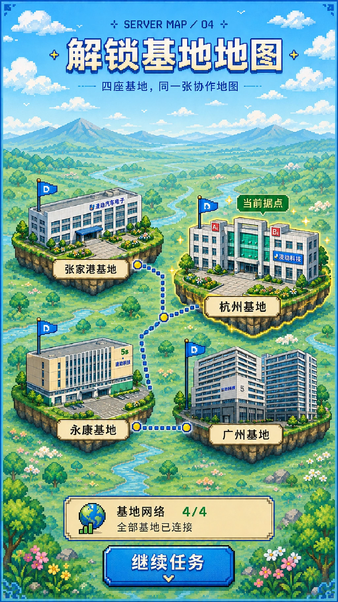

02 / CULTURE × DIGITAL EXPERIMENT
文化互动与
数字化实验
内部文化传播并不一定只能停留在文章和海报。
在一些项目里，我开始尝试用轻量网页、角色选择、点击交互和 H5，让内容从“被看见”，进一步变成“可以参与”。


01 / INTERACTIVE WEB
花名互动网页
围绕内部花名文化，尝试将原本偏静态的文化传播转化为一个可浏览、可点击的轻量网页。
02 / H5 INTERACTION
凌动 Online H5
在微信公众号 / H5 内容环境里，围绕角色选择、基地地图和点击切换等形式，尝试让企业内容拥有更接近“轻游戏”的浏览体验。

INTERACTION PREVIEW点击，
继续探索。01 → 09
继续探索。01 → 09
03 / FROM CONTENT TO EXPERIENCE
从内容，到体验
这些尝试没有改变企业文化传播的核心：先弄清楚什么值得被表达。
但当内容适合被探索、点击或参与时，网页与 H5 也可以成为另一种表达方式。它们让我开始把“传播载体”从文章、视觉和视频，继续延伸到轻量数字体验。
ROLE
返回更多项目 ↗Content Concept · Visual Direction · Interaction Exploration · HTML / H5 Experiment